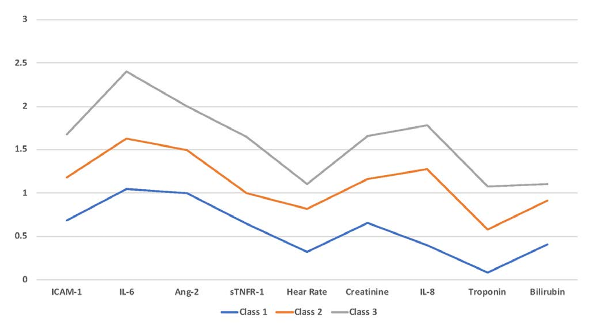

1 实验设计
- 选择合适的变量
2 数据准备
2.1 检查数据
- 样本占比低于约10%的类别可以排除（经验）
- 如果变量很重要，也应该保留
- 连续数据最好转换为等方差正态分布
- 数据需要满足局部独立性
- 违背会高估类别数量
- 相关矩阵，去除相关程度高（r>0.5，经验）的其中一个
- 如需要保留，轮流剔除进行敏感性检验
2.2 样本量
- 是否足以检出真实的潜在类别数
- 变量质量好，样本量需求就低
- 不同研究有不同发现
- \(n=500\) 或 \(n=1000\) 时，信息准则和似然比检验可以很好检出；\(n=200\) 时不能
- \(n<70\) 不可行，\(n<100\) 谨慎解读
- \(n<300\) 拟合检验效能不足
- \(n>500\) 可靠，\(n<300\) 可进行蒙特卡罗模拟来检验能效，变量质量不佳，\(300<n<500\) 也需进行检验
- 分出的亚组在检验其他变量时是否有实际效能
2.3 缺失数据
- 删除法
- 丢失样本，不推荐
- 多重插补（Multiple Imputation，MI）
- 优点：可跨模型使用
- 缺点：使数据类型更复杂
- 完全信息最大似然法（Full Information Maximum Likelihood，FIML）
- 优点：充分利用信息，首选
- 缺点：算法复杂
- 使用删除或插补时应进行敏感性检验
- 部分领域有其专门的处理手法
| 步骤 | 描述 | 建议 | 结果呈现 |
|---|---|---|---|
| 指标选择 | 所选指标将决定聚类的本质 | 1. 基于研究问题选择指标 2. 排除由模型中其他指标组合而成的复合指标 3. 排除因变量作为指标 |
清晰说明指标选择的依据 |
| 数据处理 | 转换数据以最小化极端量纲，更有可能得到有意义的类别 | 1. 分类变量：考虑合并样本占比＜10%的类别 2. 非参数数据应转换为正态分布并统一标准化 |
清晰描述数据转换和类别合并所使用的程序 |
| 局部独立性 | 假设在同一类别内，观测指标相互独立 | 1. 在完整数据集和每个类别内部检验指标变量的相关性 2. 若存在共线性，考虑移除一个或多个指标 3. 若单对指标高度相关，考虑放宽该假设 |
1. 呈现相关性最高的指标的相关系数 2. 清晰说明从分析中排除的任何变量 |
| 样本量 | 功效样本量用于：
|
1. 当n＜300时，建议进行蒙特卡洛模拟以确定样本量是否充足 2. 应进行标准功效计算，以确定检测类别间显著差异所需的样本量 |
清晰说明样本量的依据以及所进行的任何功效计算 |
| 缺失数据处理 | 缺失数据的处理方法：
|
推荐使用完全信息最大似然法和多重插补法处理缺失数据 | 1. 呈现用于处理缺失数据的方法 2. 呈现缺失组与完整组在指标和结局上的差异 3. 使用缺失数据/未插补数据进行敏感性分析 |
3 拟合模型
- 注意可能不存在潜在类别或者存在极端个例
| 提示模型拟合不佳的特征 | 排错解决方案 |
|---|---|
| 无法获得多次重复的最大似然估计 | 1. 增加随机起始值 2. 检查连续预测变量的量纲是否经过适当转换和统一标准化 3. 检查变量的分布情况，查找极端异常值 4. 若模型仍无法重复得到最大似然估计，考虑舍弃该模型 |
指标的微小变动导致模型拟合统计量 和（或） Vuong-Lo-Mendell-Rubin检验值发生大幅变化 |
1. 检查指标之间的相关性 2. 检查每个类别内部指标之间的相关性 3. 检查连续指标的数据转换（插补）是否导致重要变量出现极端缩放 |
两类别模型中存在样本占比＜15%的类别 或 包含三个及以上类别的模型中存在样本占比＜10%的类别 |
1. 检查是否存在单个指标主导了类别的划分 2. 若单个变量决定了类别划分：
3. 在独立队列中验证研究结果 |
| 模型熵值较低 | 1. 评估指标的质量：
2. 考虑向模型中加入新颖、质量更好的变量 |
4 评估模型
- 类别数最少但拟合最好
4.1 拟合指数
- 信息准则：BIC、AIC
- BIC：样本越大，惩罚力度越大，倾向于更少类别
- AIC：不受样本大小影响，倾向于更多类别
- BIC的表现通常优于AIC，尤其是大样本
- \(n<300\) 时建议同时报告BIC和AIC
- 存在连续变量时BIC优于AIC
- 有时类别增加信息准则一直减小，选择拐点
4.2 类别数量检验
- \(k\) 类别的模型与 \(k-1\) 类别的模型比较，VLMR检验（Vuong-Lo-Mendell-Rubin test）
- BLMR是VLMR的bootstrap版本
- BLMR的统计功效高于LMR
- 分类和连续变量混合的研究中，BLMR总是倾向于支持k类（局限）
4.3 类别数、样本大小、分离程度
- 类别数过多可能是过拟合
- 考虑最小潜在类别的相对大小，关注其是否有效
- 熵（Entropy）反映类别分离程度，熵高不表示分类好，但熵低表示分类不佳
| 步骤 | 描述 | 建议 | 结果呈现 |
|---|---|---|---|
| 拟合指标 | AIC、BIC以及样本量校正贝叶斯信息准则 | 1. 对于大多数分析，推荐使用BIC和（或）样本量校正BIC 2. 对于小样本量(<300)和（或）最终模型包含多个类别的分析，同时使用AIC和BIC |
1. 用于模型选择的所有指标均应在拟合统计量表中呈现 2. 若样本量n<300，应同时呈现AIC和BIC |
| 模型检验 | Lo-Mendell-Rubin检验、VLMR检验和BLMR检验 | 1. 应使用VLMR检验来检验k类别模型是否优于k-1类别模型 2. 对于包含混合类型指标数据的模型，不推荐使用BLMR检验 |
1. 所有模型统计检验结果均应呈现，并标注p<0.05的显著性水平 2. 清晰说明选择某一模型的临床或生物学依据（即使p值可能不显著） |
| 模型特征 | 类别数量、最小类别的样本量以及类别分离程度是决定模型拟合效果的重要因素 | 1. 应评估包含小样本量类别的模型，判断是否存在单个指标的异常值决定了类别的划分 2. 与类别更少、分布更均衡的模型相比，包含大量小类别的模型更难实现外部推广 |
1. 呈现分析中所有模型的拟合统计量以及每个类别的观测数 2. 呈现分析中所有模型的熵值 |
5 解释模型
- 多个随机初始值保证可重复性
- 检查各个类别，确保不是一组的分层

Salsa effect
5.1 分类然后分析
- 得到的分类是概率，按 \(p>0.5\) 进行分类可能存在误差
- 如结果变量是分类变量，可将结果变量纳入模型进行分析 Lanza & Rhoades (2013)
5.2 类别比较
- 变量在不同类别间的差异是循环论证，并不提供额外证据
- 类别间差异最大的变量有助于刻画类别特征
5.3 外部验证
- 是否具有相同的类别数
- 类别的特征是否相同
| 步骤 | 描述 | 建议 | 结果呈现 |
|---|---|---|---|
| 收敛性 | 一种内部验证形式，通过随机起始值生成每个模型的最大似然估计 | 1. 推荐使用多个随机起始值（最少50个），确保最大似然估计至少重复20次 2. 模型复杂度越高，应增加随机起始值的数量 3. 若最大似然估计无法重复，评估数据结构和类型；若始终无法重复，考虑舍弃该模型 |
1. 确认分析中所有模型的最大似然估计至少重复了20次 2. 最大似然值本身为可选呈现内容，因为AIC和BIC均基于该值生成 |
| 分类 | 模型生成的概率用于将每个观测值分配到相应类别 | 1. 应预先确定类别分配的概率截断值 2. 若模型熵值较低且类别分离度差，应在分析中纳入类别归属的不确定性 |
呈现最优模型（最能描述目标人群的最终模型）中各类别的概率分布 |
| 萨尔萨效应(Salsa effect) | 指强制将原本不存在潜类别的人群划分为多个类别的现象 | 检查指标变量的分布，判断是否存在将单一连续分布的人群强行拆分为多个类别的情况 | 不适用 |
| 结局指标 | 为证明所识别类别的价值，需展示某些关键变量在不同类别间存在差异 | 1. 应在分析计划中预先说明关键判别结局指标 2. 研究者在确定最优拟合模型时，应对这些结局指标设盲 |
预先制定的分析计划应说明用于判断潜类别间差异及评估其临床效用的指标 |